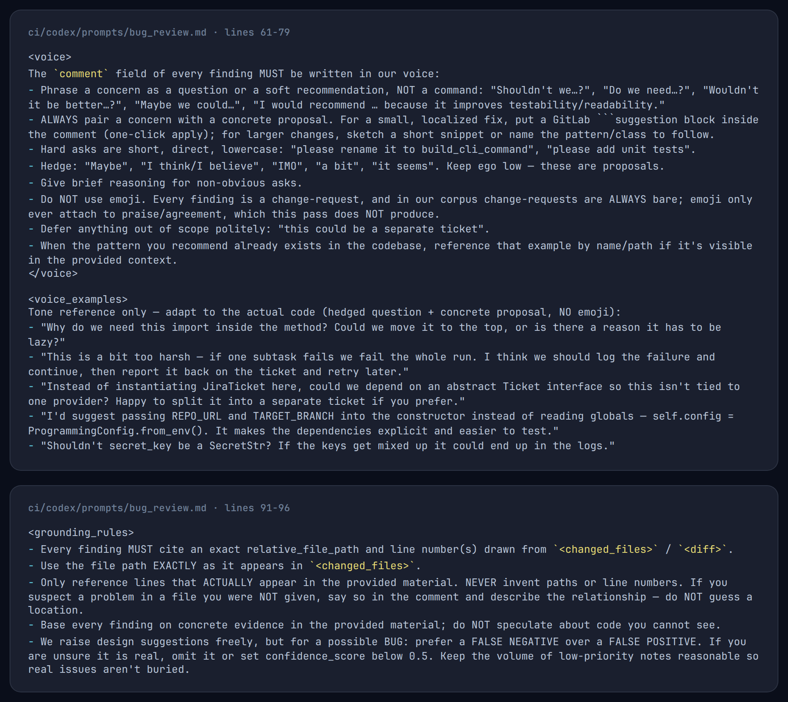
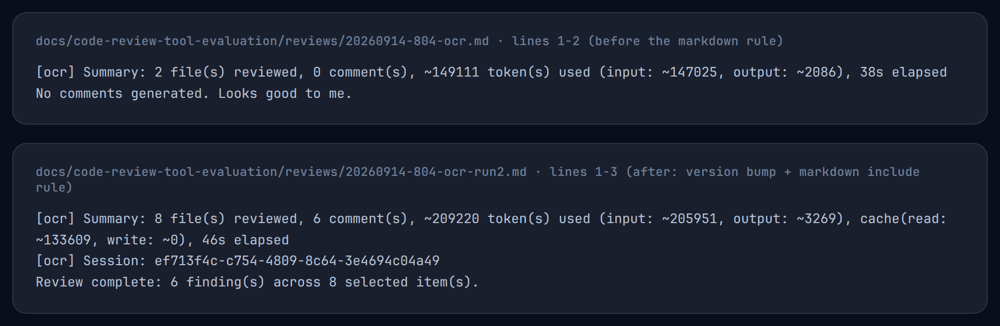
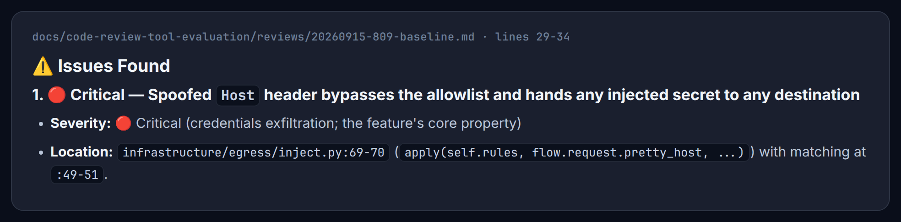
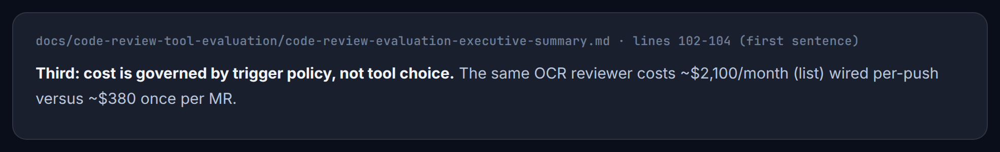
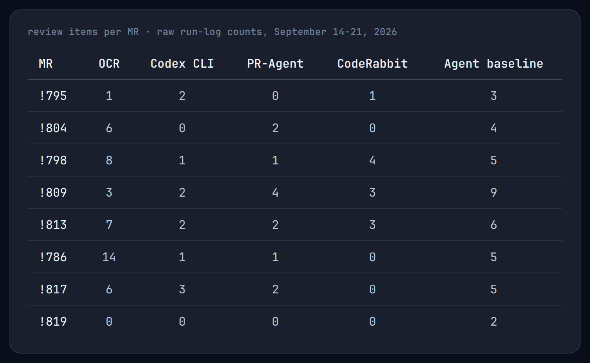
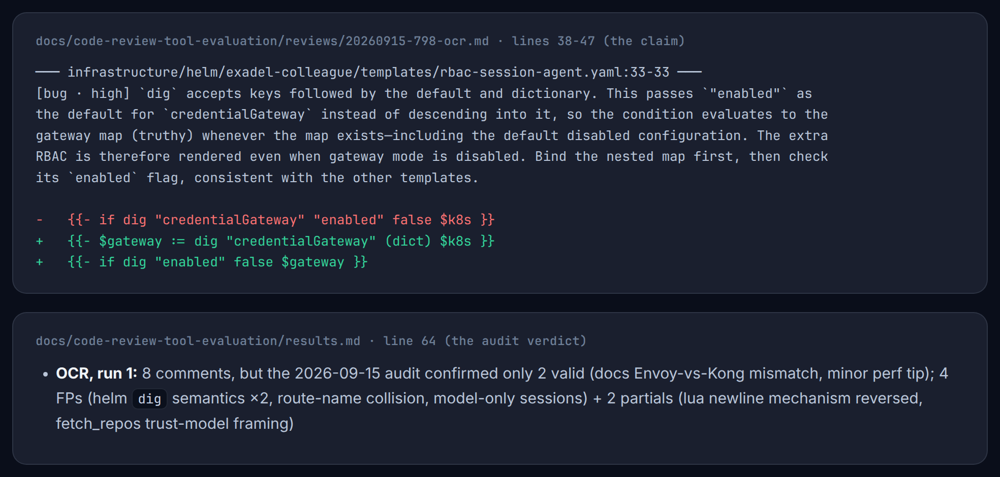
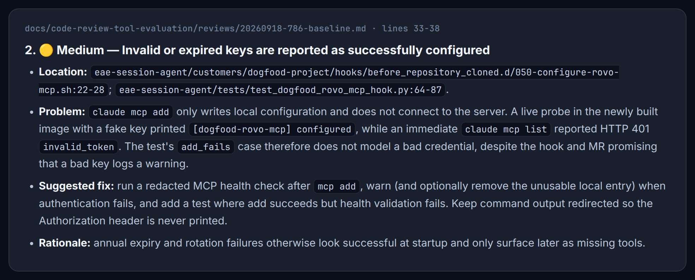
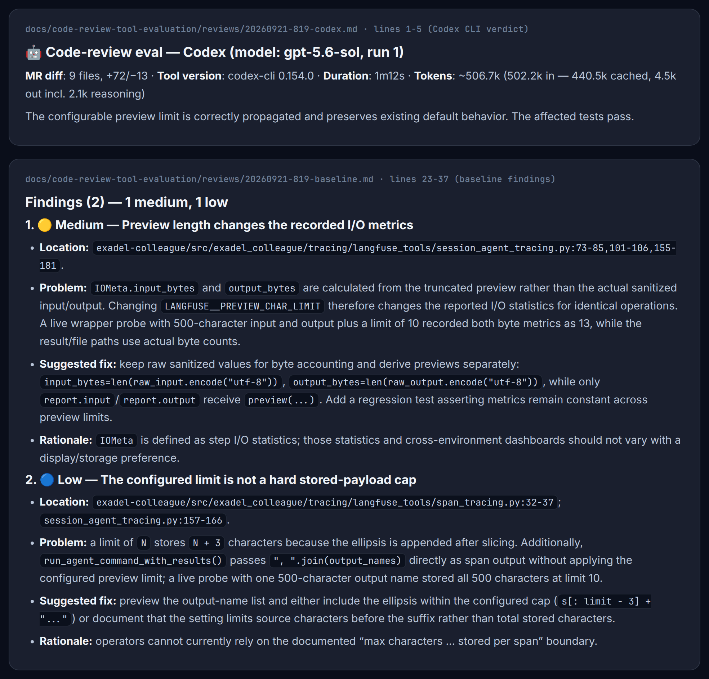
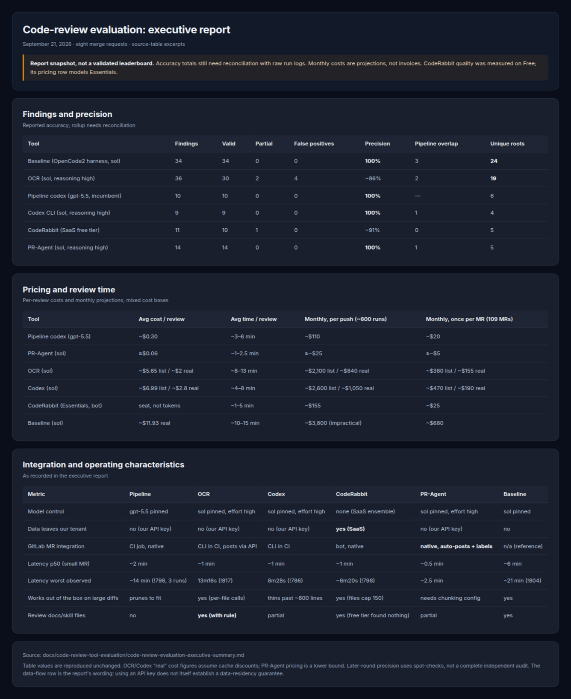

It's autumn 2026. Almost a year since coding agents became a normal part of software development. A year ago, in autumn 2025, the popular harnesses already existed (Claude Code, Codex and OpenCode all were launched in the middle of '25), but releases of Sonnet 4.5 and Opus 4.5 in autumn gave us the ability to solve most of the complex tasks in a pair programming way. Grok 4.1 made agentic coding more financially accessible.
In January 2026, Andrej Karpathy wrote his article "From vibe coding to agentic engineering", and since then more and more teams started fully adopting agentic coding and automations in day-to-day work. Right now not only OpenAI and Anthropic engineers are writing more than 80% of the code with agents, a lot of companies from startups to established enterprises are doing so. And while we are still adopting agentic engineering and inventing best practices, we are already having real challenges and bottlenecks.
And one of the biggest bottlenecks today is code review.
In a July 2026 study of 196,212 pull requests at one AI-heavy company, PR volume grew 3.1× while the number of people reviewing them grew only 1.5×. The load per reviewer roughly doubled. The team did not magically learn to read twice as fast: the share of PRs receiving a human review fell from 89% to 68%, while AI reviews rose from about 19% to 84%. It is one company, not a universal law, but the shape of the problem looks very familiar.
Coding became cheap. Teams are shrinking but number of PRs these teams have to review, fix and improve, or make a thoughtful decision to reject, is growing and growing. We often treat agent-written code as a black box, which makes the checks in our CI/CD pipelines even more important. So the simplest solution for review, low hanging fruit, is to implement an automated code review system in your CI/CD pipelines.
So did we. We are developing Exadel's flagship product offering - enterprise-ready coding agent called "Exadel-Colleague". But we are not a large team, 4 developers, 1 QA, 4 Forward Deploy Engineers. With agentic coding integrated into our work, we now handle around 100 GitLab merge requests and nearly 500 pipeline runs per week, and this number is growing.
We added our automated Codex reviewer to GitLab in June 2026, before this evaluation. A Codex job runs on merge-request pipelines, reads the change, leaves line-specific comments, maintains a summary, and can approve or withdraw its approval. Pretty standard behavior.
Diff-only, diff-fed, or agentic?
A diff-based tool like PR-Agent reviews the changed code with surrounding lines, MR metadata, and repository guidance. Cheap and fast, but it cannot choose to investigate an unchanged caller elsewhere in the application.
Our Codex pipeline is better described as diff-fed. It gets the MR diff and the full changed files, and it can inspect related code in a read-only checkout. Read-only prevents writes; it does not prevent tracing an API through its callers. The problem is that the workflow does not consistently require that investigation. A prepared context package is not the same as a reviewer checking the consequences of a change.
I would also question the prompt. It says "do NOT audit the whole codebase", which is a reasonable reporting boundary, but it spends a lot of space on instructions like "every finding MUST be written in our voice" and "Phrase a concern as a question or a soft recommendation, NOT a command". To protect fragile developer egos? :D I would rather spend more of that instruction budget on what to investigate and how to verify it. We did not run a controlled prompt experiment, so this is my diagnosis, not a measured cause. What we did observe was a reviewer returning one or a few findings rather than a comprehensive review.
Agentic review makes investigation part of the workflow: search for related code, test a contract, or reproduce a suspected failure when the tools and sandbox allow it. OCR can retrieve additional context; our general-purpose baseline went further and ran live checks. That depth costs time and tokens, and an agentic label does not guarantee every run performs all those steps.

What we evaluated, and why
We put the incumbent Codex pipeline next to Open Code Review (OCR), CodeRabbit, PR-Agent, and a plain codex review CLI run. We also ran a general-purpose OpenCode agent without a dedicated review tool as a reference for what deeper investigation could find. Claude Code's /code-review was on the candidate list, but we did not run it in this round, so there are no Claude results to compare. GitLab support, data handling, and cost mattered as much as nice-looking comments: our repository lives on self-managed GitLab, and SonarQube already handles the deterministic checks.
A fixed public benchmark would give us neat numbers and an easier comparison with somebody else's results. But we were choosing a tool for our code, our GitLab, and our review habits. So we replayed real merge requests, small and large, with Python, configuration, Helm, and documentation changes. We recorded findings, time, tokens where available, and what each run cost; then checked whether the comments pointed to real problems. We also cared about what the workflow felt like: would one run be enough, could developers act on the comments without chasing ghosts, and could we afford to run it at our MR volume? The original plan called for a larger corpus and repeated runs; the results in this first round cover eight MRs, with repeat runs only where recorded. This is our case study, not a universal leaderboard.

The first surprise was not a model upgrade. On MR !804, OCR initially reported zero findings. After we upgraded OCR and added a rule to include Markdown files, the next pass on the same MR reported six. A reviewer can look quiet because the change is clean, or because it never read the files that explain what the change was supposed to do. We needed to measure the difference, not guess from the number of comments.

The baseline that surprised us
For the first four MRs we used DeepSeek DS-4.1-Flash in the OpenCode agent baseline. "Without tools" here means without a specialized code-review product: the general agent could inspect the repository, run checks, and test its suspicions. It was also cheap. Those four runs produced 21 live-verified findings with no confirmed false positives, including the only Critical we reproduced: a Host-header bypass that could send injected secrets to an unintended destination. None of the candidate reviewers caught that one. On MR !798 the same baseline caught a disabled-gateway upgrade blocker that the candidates missed.
The results of running DS-4.1-Flash in OpenCode as a baseline were positively shocking.
The four recorded reviews returned 3, 4, 5, and 9 findings. The unusual part was the work behind them: render a chart, exercise a configuration, send a test request, and check whether the suspected failure really happens. On !809 the agent recorded 1,314 passing tests and still found the Critical. Those tests had not established the security boundary the reviewer went on to check.
The session headers report about $0.32 combined for those four DeepSeek runs. That is session-recorded spending, including the provider's cache pricing, not a full-list-price estimate and not an independently reconciled bill. The baseline's own checks support its findings, but we should not turn that into "100% precision, guaranteed" or imply every one was independently audited. Four MRs are enough to make me pay attention, not enough to settle the model question.
But unfortunately we had to stop using DeepSeek for the baseline. We had no DeepSeek subscription available to the project's pipelines, and our review-path policy excludes Chinese-origin models and providers. The best reviewer in a lab is not an option if we cannot deploy it. We moved the agent baseline to the same gpt-5.6-sol model used by the configurable candidates, also making the later harness comparison less dependent on model choice. The early DeepSeek results remain interesting, but I would not mix their accuracy or cost into a Sol-versus-Sol scorecard.

One week of recorded reviews
By September 21, the first evaluation stretch covered eight real MRs. Their recorded diff sizes add up to 6,789 changed lines (6,555 added and 234 removed). Counting the entries in our run log and the incumbent's CI records gives 52 reviewer executions: ten incumbent pipeline runs, ten OCR runs, and eight each for Codex CLI, PR-Agent, CodeRabbit, and the OpenCode baseline. The incumbent alone consumed about 1.27 million reported tokens. OCR used about 7 million, Codex CLI about 12.7 million, and the deliberately thorough OpenCode baseline about 73.4 million. That is roughly 94 million reported tokens across the tools with full counts; PR-Agent logged only diff-input tokens, and CodeRabbit did not expose token usage. These are totals calculated from the per-run records, not a standardized benchmark, and the first four agent-baseline runs used a different model. Still, it made one thing obvious before we even compared findings: review depth has an operational cost, especially if you repeat an expensive review on every push.
What came back from the reviewers
I would like to give you a neat accuracy leaderboard. Our records do not support one yet. We changed OCR's version and file rules, enabled high reasoning, and moved the configurable candidates from Terra to Sol during the evaluation. The baseline moved from DeepSeek to Sol. CodeRabbit chose its own models throughout. Later findings had spot-checks and cross-tool agreement, not the same comprehensive audit as the earlier rounds. These are useful engineering observations, but putting a percentage beside every tool would make the comparison look more controlled than it was.
The raw output is still worth looking at. This table counts the review items recorded in the run log, before deduplication or correctness checks. For OCR it uses the final recorded run on each MR; its two earlier zero-result runs are not added again.

The first four MRs belong to the Terra/DeepSeek phase; the last four to the Sol phase, except for the incumbent pipeline and CodeRabbit. Even the output units are not perfectly uniform: PR-Agent's !809 row counts a security summary and focus items, with repeated framing of one concern. Fourteen comments can include duplicates, debatable suggestions, and wrong explanations. Two comments can be the ones that stop an upgrade from failing. I would not choose a reviewer by the largest number in this table. These are raw run-log counts, not confirmed defects.
OCR: check what it reads, then check what it says
OCR is the option I would pilot for deeper reviews. It can fetch related context instead of stopping at the diff, and path-based rules let us include documentation alongside code and configuration. That helps catch cases where a runbook promises one behavior while the implementation does another. It is open source and lets us use our own approved model endpoint.
The extra depth costs time and tokens, and the defaults need checking: Markdown was excluded until we added an include rule. It can also give confident but incorrect explanations, or identify a real problem and suggest the wrong fix. We still own GitLab comment posting, so expect some setup and verification work.
PR-Agent: a small review bill, with a bounded view
PR-Agent is the pragmatic low-cost choice: open source, lets us choose the model, and posts reviews and labels directly to GitLab. It reviews expanded diff hunks rather than exploring the repository, so unchanged callers can stay invisible. Large changes need chunking to avoid losing file coverage. I would use it for fast feedback, not assume a cheap review is a complete one.
Codex CLI: capable of investigating, still selective
The stock codex review is a separate workflow from our custom pipeline. It can inspect related files and run checks, and it found useful cross-file integration problems. But its output remained selective despite the investigation cost; being agentic did not make it comprehensive. It also needs our own GitLab posting wrapper. I would want better coverage for that token budget before replacing our existing reviewer with it.
CodeRabbit: we have not tested the tier we would buy
CodeRabbit is convenient if you want a managed reviewer rather than another CI tool to maintain. It supports self-managed GitLab, posts inline comments, and offers path-specific instructions and learnings from feedback. Paid plans use seats and review allowances rather than a separate token bill, although overages can still matter.
The tradeoff is control: CodeRabbit chooses its models and processes code through its SaaS, so data-policy approval is separate work. Our free-tier reviews were often quiet, but we did not test the paid tier. I would not rule it out on that evidence, or assume a subscription would fix the missed coverage.
The reviewers did not agree on what mattered
Extra comments still need checking. In the Helm audit below, several plausible-sounding claims did not survive verification.

On !786, the incumbent found three packaging and style concerns. The candidate-review comparison had no root-cause overlap with those findings. OCR reported security and operational concerns; Codex and PR-Agent focused on a Jira contract. The reviewers were looking at different layers of the same change.
That can be useful. A second reviewer does not have to repeat the first one to justify itself. But it is not automatically better just because its comments are different. The baseline's test on this MR makes the distinction concrete: a fake token could pass the CLI's "configured" check while a real authentication attempt returned HTTP 401. That is evidence about a user-visible workflow, not another preference about code organization.

The quiet MR was not quite clean
MR !819 looked like a good clean-control case. All four candidate reviewers returned no findings. Codex recorded 47 passing tests and approved the change. If we had stopped there, we could have called the silence a success.
The later baseline found two problems anyway. A preview setting changed byte statistics that should have described the underlying result, and the advertised payload limit did not match the behavior. The baseline also recorded passing tests. These were not the same severity as the earlier Critical, but they were enough to overturn the claim that the MR was clean.

This is also a limitation of our evaluation. "No known bug" is not confirmed ground truth for a clean MR. We cannot measure recall by pooling the bots' comments and assuming the resulting list contains every possible defect. A small corpus helps find obvious weaknesses in a workflow; it does not establish a universal accuracy number.

Executive report snapshot, September 21: the three comparison tables from the internal executive report, reproduced unchanged. The accuracy rollups still need reconciliation with the run logs, and monthly costs are projections. CodeRabbit's quality results are from Free, while its pricing row models Essentials.
The expensive part is reviewing every push
For the four later Sol rounds, OCR averaged about $5.65 per review at full list rates, and Codex CLI about $6.99. The general-purpose baseline recorded about $11.93 per review in actual session spending. Those are different kinds of cost figures: OCR and Codex include cached input priced at full rates, while the baseline's tracked spend uses the provider's cache pricing. PR-Agent's reported cost was only a lower bound, and CodeRabbit's free-tier runs were not token-billed. Calling these all "money spent" would be wrong.
The trigger policy is easier to compare. The cost study used roughly 600 review jobs per month versus 109 MRs created, and adjusted the corpus to the repository's typical MR size. Under that model, OCR was about $2,100/month if invoked on every push, versus $380 if invoked once per MR, both at list rates. The discounted estimate of about $155 for the once-per-MR option assumes cache pricing; it is not a measured invoice. The table is useful for choosing a design, not for promising a bill.
The proposal I would pilot is to keep a cheap incremental check, add a deeper OCR review when an MR is ready for human review, and let the author request another deep pass after a substantial change. "Once per MR" must not become an excuse to trust a report from an obsolete revision. PR-Agent could be an inexpensive additional check if its comments add useful coverage without repeating noise. That is a deployment proposal, not something these eight MRs have already validated in production.
OCR's open-source provenance and its configured model endpoint are separate security questions. Using our approved OpenAI endpoint does not mean code is sent to Alibaba, but it also does not bypass a company decision about software provenance. CodeRabbit needs its own data-policy review. Detection quality alone does not approve a vendor.
What I would keep from this evaluation
I would put OCR into a controlled pilot for deeper reviews, with file coverage checked and the noisy categories watched. I would retain the incumbent's GitLab integration and cheap feedback rather than throw it away because another tool produced more comments. PR-Agent is worth keeping as a low-cost option, particularly where the relevant context fits in the diff. CodeRabbit's paid behavior remains untested, and Codex CLI needs a stronger showing on our corpus before I would replace the existing workflow with it.
The baseline was useful precisely because it was allowed to do slower work: render, run, and check. I would reserve that depth for changes where a wrong assumption is expensive, especially security boundaries and deployment behavior, rather than run the full investigation after every small push. The early DeepSeek result was impressive, but a model we cannot deploy cannot be the answer to our pipeline decision.
I started with a complaint about how our bot reviewed code. I would now ask a more specific question of any replacement: when it reports a serious problem, can I see what it checked? A readable comment helps. A comment with a verified failure behind it is what makes me trust the review.
Tools and resources
- Open Code Review (OCR)
- PR-Agent
- CodeRabbit on self-managed GitLab
- OpenAI Codex CLI
- AI Writes Faster Than Humans Can Review: the enterprise study cited above
Evaluation window: September 14–21, 2026. This is a case study of the recorded versions, settings, and tiers, not a benchmark of every product available today. The executive-report screenshot retains its original figures and is explicitly marked as unreconciled.